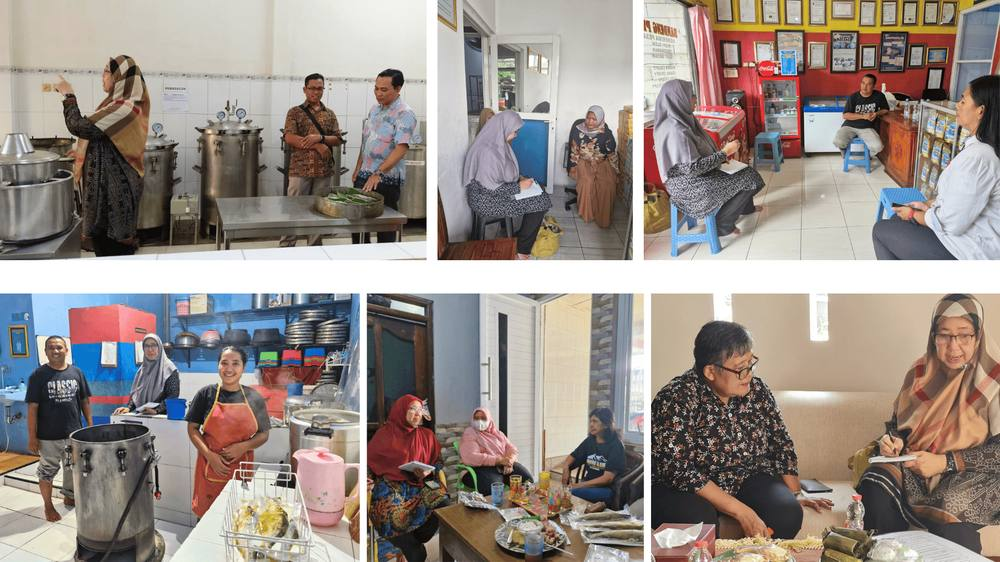
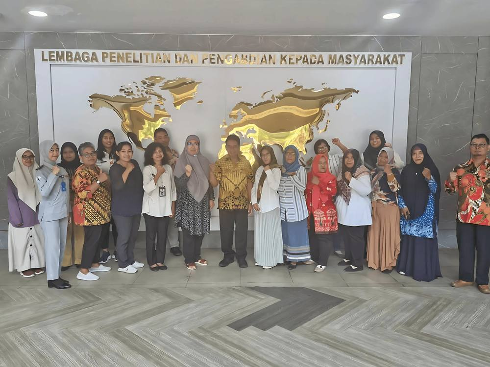

Pemberdayaan Perempuan dan UMKM di Semarang: Perjalanan Menuju Pengembangan dan Inovasi Rantai Nilai Ikan Bandeng

Semarang , GQSP Indonesia (10/03/2024) - Di Semarang, Jawa Tengah, sebuah inisiatif telah dilaksanakan untuk mendukung usaha kecil dan menengah (UKM) dalam sektor pengolahan bandeng. Melalui kolaborasi antara GQSP (Global Quality and Standards Programme) yang diwakili oleh Ibu Novia Priyana dan Bapak Mumfaizin, Universitas Negeri Semarang (UNNES), serta Dinas Kelautan dan Perikanan (DKP) Semarang, program ini bertujuan untuk meningkatkan kemampuan teknis pelaku usaha dalam memenuhi standar keamanan pangan dan mendapatkan sertifikasi penting seperti Good Manufacturing Practice (GMP), Hazard Analysis and Critical Control Points (HACCP), dan Standar Nasional Indonesia (SNI).
Gap Assessment untuk Pengembangan Kapasitas
Langkah awal dari program ini adalah melakukan penilaian kesenjangan (gap assessment) selama tiga hari (8 – 10 Maret 2024) pada 10 UKM pengolahan bandeng di Semarang. Penilaian ini bertujuan untuk mengevaluasi kondisi saat ini dari proses produksi para pelaku usaha dan mengidentifikasi area yang perlu diperbaiki. Hasil dari penilaian ini akan digunakan untuk merancang program pengembangan kapasitas yang sesuai, sehingga para UMKM dapat memenuhi persyaratan keamanan pangan dan memperoleh sertifikasi yang dibutuhkan. Program ini memberikan perhatian khusus pada sertifikasi GMP dan HACCP, yang semakin penting dalam meningkatkan kepercayaan pembeli dan memperluas akses pasar, baik di tingkat lokal maupun internasional.
Fokus pada Pemberdayaan Perempuan
Dari 10 UMKM yang terpilih, 9 di antaranya dipimpin oleh perempuan. Hal ini menunjukkan komitmen program untuk memberdayakan perempuan dalam sektor pengolahan bandeng. Dengan memberikan dukungan dan pelatihan yang dibutuhkan, program ini berupaya membantu pengusaha perempuan untuk mengembangkan bisnis mereka dan bersaing di pasar yang lebih luas. Dukungan terhadap para pengusaha perempuan ini tidak hanya berdampak pada perkembangan bisnis mereka, tetapi juga pada pertumbuhan ekonomi komunitas lokal, mengingat perempuan sering kali memainkan peran kunci dalam mengelola keuangan keluarga dan bisnis.

Inovasi dan Dukungan dari UNNES
Sebagai mitra utama, UNNES memainkan peran penting dalam memberikan dukungan teknis kepada para pengolah bandeng. Salah satu inovasi yang diperkenalkan adalah penyediaan 15 alat presto untuk membantu UMKM dalam mengontrol waktu dan suhu pemasakan, yang merupakan faktor krusial dalam menjaga kualitas dan keamanan produk. Selain itu, UNNES juga melibatkan pelatih kualitas lokal dan mahasiswa dalam proses pengembangan kapasitas. Ini tidak hanya memberikan pengalaman langsung kepada para mahasiswa dalam membantu UMKM, tetapi juga membangun jembatan antara dunia akademis dan kebutuhan industri.
Menuju Pertumbuhan Berkelanjutan
Kolaborasi antara GQSP Indonesia, UNNES, dan DKP Semarang ini merupakan langkah signifikan dalam membantu UMKM pengolahan bandeng di Semarang untuk mencapai sertifikasi keamanan pangan dan meningkatkan daya saing produk mereka. Melalui dukungan yang tepat, para pengusaha, terutama perempuan, dapat lebih siap menghadapi tantangan industri dan membuka akses ke pasar yang lebih besar.
Inisiatif ini tidak hanya meningkatkan kualitas produk bandeng yang dihasilkan, tetapi juga berkontribusi pada pertumbuhan ekonomi yang berkelanjutan di Jawa Tengah. Dengan fokus pada peningkatan kapasitas dan kepatuhan terhadap standar keamanan pangan, program ini membantu mendorong UMKM lokal menuju masa depan yang lebih cerah dan kompetitif.
